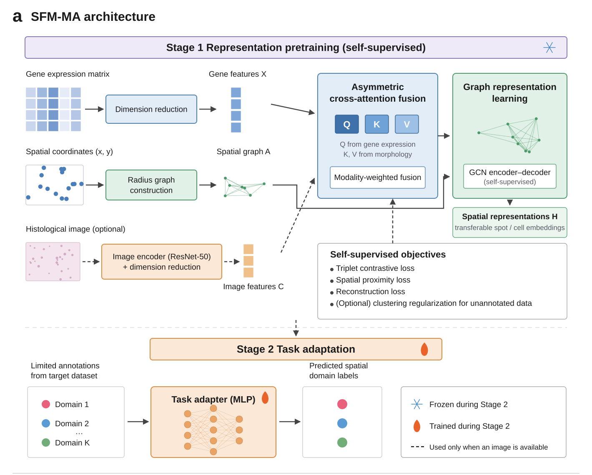
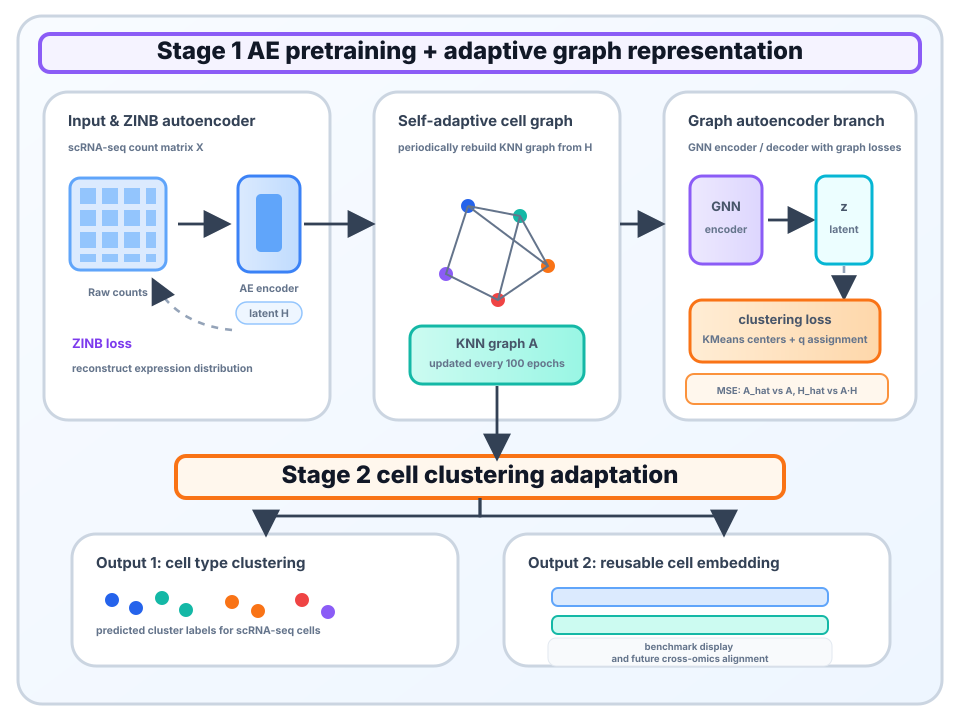

Spatial Transcriptomics
SFM-MA 空间转录组框架

融合 SaDGAE 的自适应细胞图学习与 SFM-MA 的空间多模态预训练-适配框架， 在同一表达编码底座上完成细胞类型聚类、空间域识别与跨组学表示迁移。


用同一表达编码底座承接单细胞与空间转录组，再通过图结构和任务适配器分流
联合建模 scRNA-seq 与 ST 的基因表达特征，形成可迁移的细胞级表示
SaDGAE 分支动态重构 cell-cell 关系，缓解单细胞数据稀疏与 dropout 噪声
SFM-MA 分支融合空间邻接、基因表达与组织图像，编码 spot 级组织结构
聚类适配器输出细胞类型，空间适配器输出空间域标签，统一可视化展示
空间分支采用 SFM-MA 在 DLPFC 上的实测基准，单细胞分支采用 SaDGAE 聚类实验结果
从单一空间域识别升级为跨组学统一图表示学习，一套框架覆盖细胞聚类与空间域识别
单细胞侧构建自适应 cell graph，空间侧构建 spot spatial graph，在共享表达空间内完成结构对齐。
表达编码器、图编码器和任务适配器解耦，支持细胞聚类、空间域识别和跨数据集迁移三个任务。
从细胞类型解析到组织区域定位，形成面向精准医学、肿瘤微环境和组织发育研究的完整分析链路。
覆盖 9 个公开空间转录组数据集与 9 个单细胞转录组数据集，横跨 4 种测序平台
12切片 · 人脑 · Visium
1切片 · 小鼠前脑 · Visium
1切片 · 人乳腺癌 · Visium
1切片 · 小鼠下丘脑 · MERFISH
9切片 · 小鼠额叶皮层 · MERFISH
1切片 · 小鼠视觉皮层 · STARmap
1切片 · 小鼠体感皮层 · osmFISH
1切片 · 人肺癌 · Visium
1切片 · 人卵巢癌 · Visium
9数据集 · 细胞类型聚类 · scRNA-seq